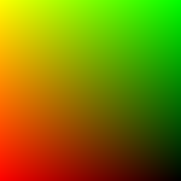
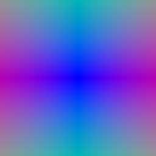
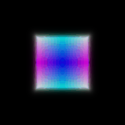

16-825 · Learning for 3D Vision
Assignment 3: Volume Rendering, NeRF, and 3D Gaussian Splatting
Part A · Neural Volume Rendering
1. Differentiable Volume Rendering
1.3 Ray Sampling


1.4 Point Sampling

1.5 Volume Rendering


2. Optimizing a Basic Implicit Volume
2.2 Loss and Training
| Parameter | x | y | z |
|---|---|---|---|
| Box center | — | — | — |
| Side lengths | — | — | — |
Rounded to the nearest 0.01.
2.3 Visualization
Pending —
nerf/images/part_2.gif3. Optimizing a Neural Radiance Field (NeRF)
Pending —
nerf/images/part_3.gif4. NeRF Extras
4.1 View Dependence
Pending — results on the materials scene
View dependence vs. generalization
Pending
4.2 Coarse/Fine Sampling
Pending — coarse/fine results
Speed vs. quality
Pending
4.3 VolSDF
Pending —
nerf/images/part_4_3_geometry.gifPending —
nerf/images/part_4_3.gifWhat \(\alpha\) and \(\beta\) do
Pending
Questions
- How does high \(\beta\) bias your learned SDF? What about low \(\beta\)?
Pending
- Would an SDF be easier to train with volume rendering and low \(\beta\) or high \(\beta\)? Why?
Pending
- Would you be more likely to learn an accurate surface with high \(\beta\) or low \(\beta\)? Why?
Pending
Chosen settings
Pending
Part B · 3D Gaussian Splatting
5. 3D Gaussian Rasterization
Pending —
GS/output/part_5_render.gif6. Training 3D Gaussian Representations
| Parameter | Learning rate |
|---|---|
| Means | — |
| Scales | — |
| Colours | — |
| Opacities | — |
Iterations: — · PSNR: — · SSIM: —
Pending —
GS/output/part_6_training_progress.gifPending —
GS/output/part_6_training_final_renders.gif7. Extensions
7.1 Rendering Using Spherical Harmonics
Pending —
GS/output/part_5_render.gif (7.1)Pending —
GS/output/part_5_render.gif (5.5)Comparison 1
Pending — same frame, with vs. without spherical harmonics
Differences
Pending
Comparison 2
Pending — same frame, with vs. without spherical harmonics
Differences
Pending
7.2 Training On a Harder Scene
| Parameter | Learning rate |
|---|---|
| Means | — |
| Scales | — |
| Colours | — |
| Opacities | — |
Iterations: —
| Method | PSNR | SSIM |
|---|---|---|
| Baseline | — | — |
| Improved | — | — |
Pending — baseline
part_7_2_training_progress.gifPending — improved
part_7_2_training_progress.gifPending — improved
part_7_2_training_final_renders.gifModifications
Pending